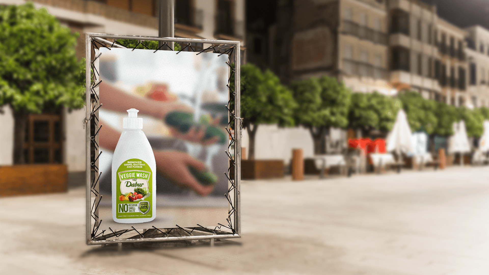
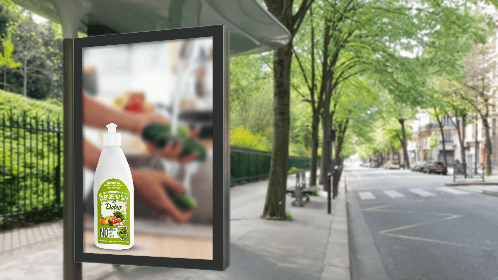

The audience needed to understand why produce requires a dedicated wash without turning the outdoor creative into an instruction panel.
← Back to workFresh comes home.
Dabur · Veggie Wash
Fresh comes home.
Care begins before cooking.

Project overview
A new kitchen habit.
Made easy to understand.
Dabur Veggie Wash introduces a dedicated cleaning step for fresh produce before preparation. The print needed to make that unfamiliar category feel natural within an everyday kitchen routine.
The white bottle remains sharp and recognisable while hands washing vegetables create the context behind it. The result is a direct product story built around food, preparation and reassurance.
- Product
- Fruit + Veggie Wash
- Moment
- Before Preparation
- Promise
- No Residue Cue
- Expression
- Clean + Natural
The communication challenge
Introduce a category.
Keep the routine familiar.
The expression had to feel appropriate for food contact: clean, simple and free from the visual language of harsh household chemicals.
The creative device
The kitchen sets the habit.
The bottle makes it specific.
The blurred hands and vegetables establish a familiar preparation moment without competing for attention.
Placed sharply in front, the white bottle becomes the answer. Its green label, produce imagery and benefit hierarchy connect the product directly to fruits and vegetables.
The fast-read system
Produce. Wash.
Prepare.
- 01
The food
Fresh vegetables establish the product’s precise use case.
- 02
The action
Hands at the sink place the wash naturally before cooking.
- 03
The pack
A clean white silhouette delivers recognition and reassurance.
The work in context
One clear kitchen cue.
Two outdoor settings.
Both supplied applications remain fully visible and retain their original ratio, preserving the bottle, washing action and surrounding placement context without cropping.


The outcome
A new step made natural.
A benefit made recognisable.
The final system introduces the produce-wash category through a familiar kitchen moment, allowing the product and its core reassurance cues to land quickly across outdoor formats.
Category clarity
Vegetables and the bottle explain the product’s role immediately.
Routine relevance
The washing action places use naturally before food preparation.
Clean recognition
The restrained white-and-green pack supports a food-safe impression.
Before the first cut.Start with a cleaner wash.
Need a new product habit made instantly understandable?